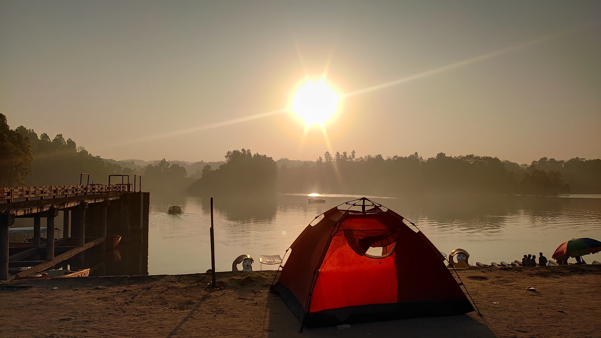
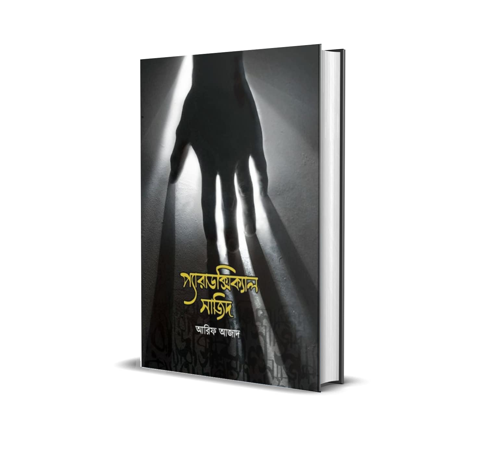
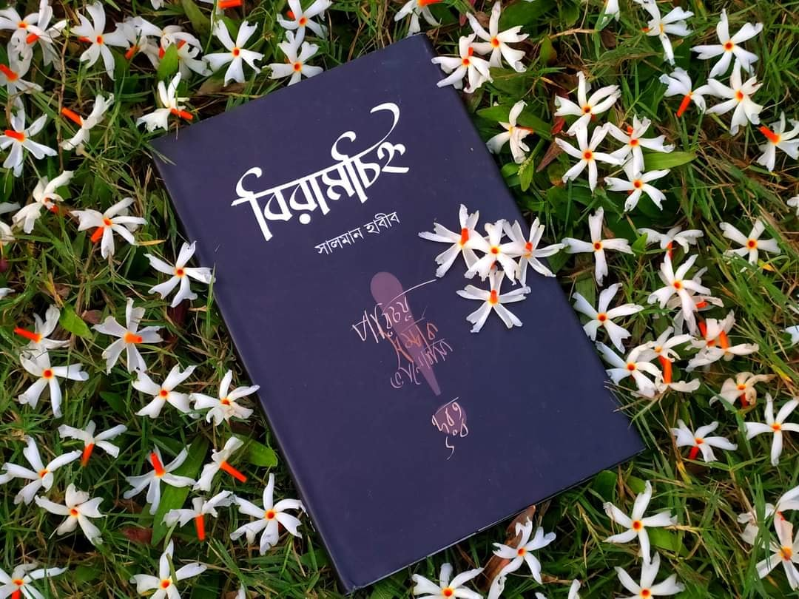
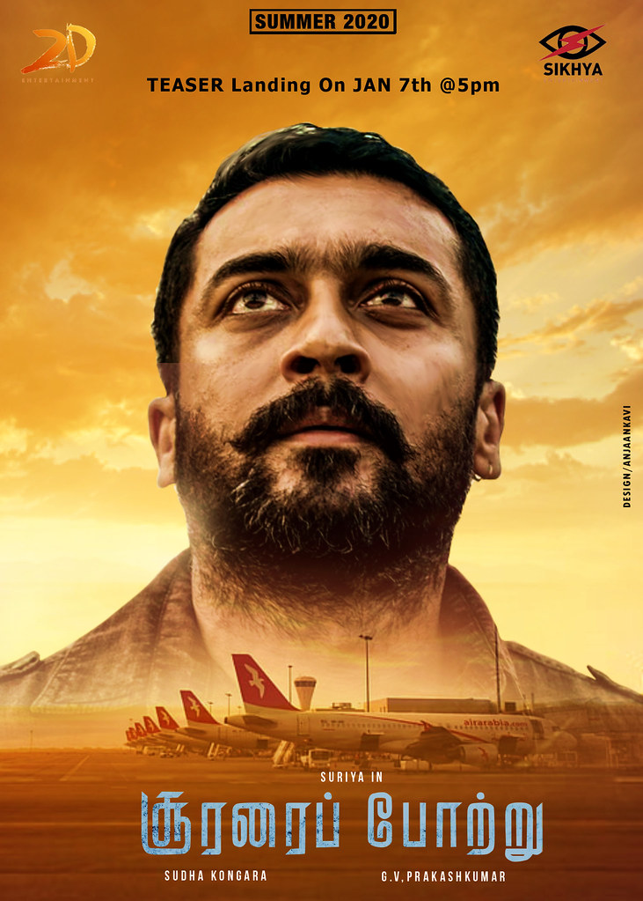
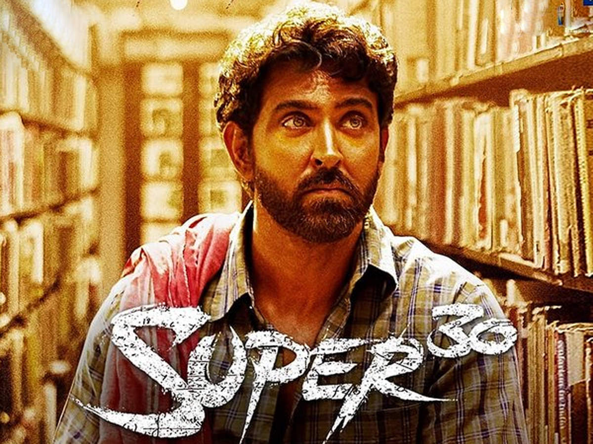
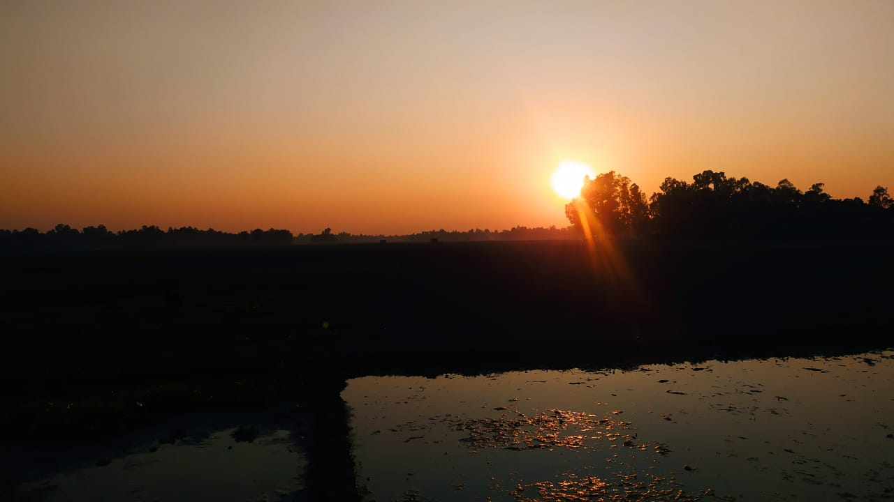
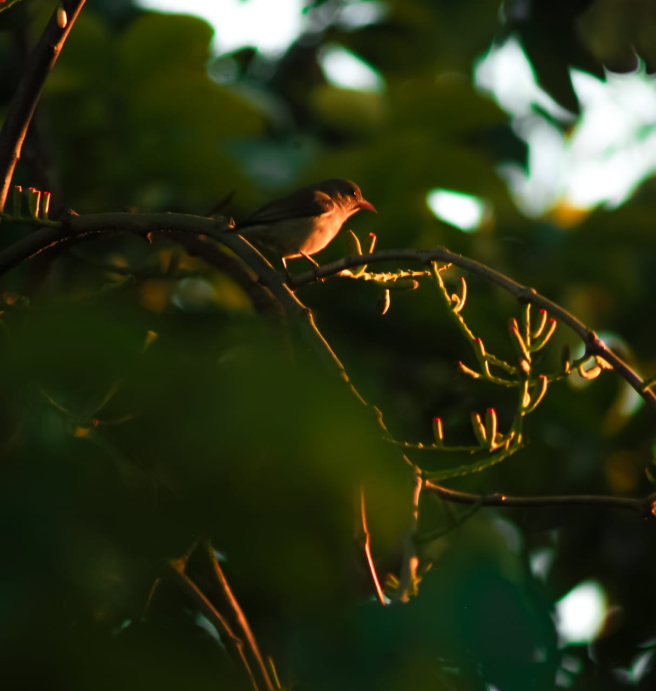
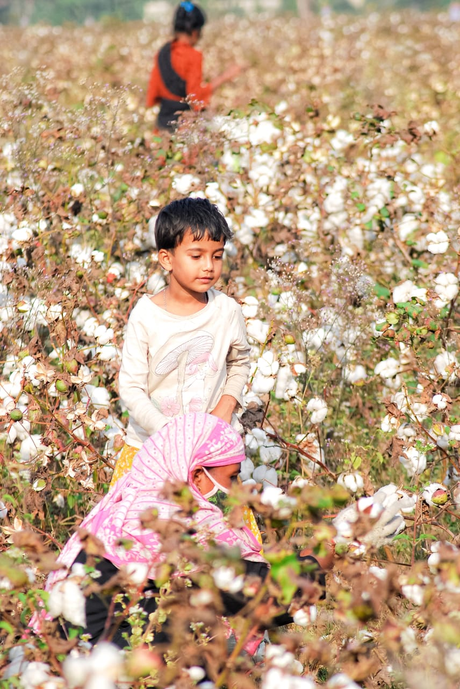

TRAVELLING

Last year me and some of my friends went to chittagong to visit some historical place to refresh our mind. In that journey we visited mohamaya lake, guliyakhali sea beach, sitakunda and khoiyachora fountain. I thnik that travelling will increase our real life knowledge.On the other hand , it is the most pure source to refresh our mind.
READING BOOK



Few days ago, I feel a weak point to read non academic book to increase my knowledge aslo by my hobby. I really love the logical and romantic type of books. Another type of books which will increase my trust on my religious. My main choice the books of Arif Azad who is the most famous writer. Peradoxical sajid is my most favorite book. I love another writers book named Salman Habib.Who is famous to the youth for his romantic type of books.Biramcinho is the top of his written.
WATCHING MOVIE



I not too much movie addicted person. But sometimes when I was free , at that time I like to watch movie. Not a specific side of movie actually I like to watch reallife story based movie. My most favorite movies are 3 idots, super3o and soorarai puttra. These three movies base on reallife story. I thanik that every man should watch this movies.
MOBILE PHOTOGRAPHY



I really like to photo shoot. It helps me to capture a beautiful moment. When I stay alone, I checkout my photography and see that my photography talent. But I am not a professional photographer its my hobby and I like to do this. First one in this website took from the side of pond and second one took from a tree which is a bird taking rest on the tree and last one took form Shimul garden of Gazipur. There was a big shimul garden. The farmer was cultivate and sell them with a satisfied price.